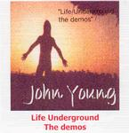

Home Artist links Label link

John Young - Life Underground - The Demos
| Artist: | John Young |
| Title: | Life Underground - The Demos |
| Label: | Heritage Records HR001 |
| Length(s): | 44 minutes |
| Year(s) of release: | 1999 |
| Month of review: | [06/2002] |
Line up
Tracks
| 1) | All Grown Up | 5.08
|
| 2) | Closer | 4.34
|
| 3) | Palmistry | 5.27
|
| 4) | Wings To Fly | 2.13
|
| 5) | Last One Home | 4.38
|
| 6) | Nothing At All | 3.31
|
| 7) | Imaginary People | 5.17
|
| 8) | Ivory Tower | 6.54
|
| 9) | Life Underground | 4.14
|
| 10) | Reprise | 2.24
|
Summary
The music
Briton John Young is known to have played with quite a score of artists, amongst which Fish, Bonnie Tyler and The Scorpions, as well as being a member of reformed Greenslade. With this, he created a mildly progressive singer songwriter sound, not unlike what Tony Carey (both in voice as in music) did. The opener All Grown Up immediately gives a good showcase of what Young is up to: a gentle melody, okay vocals, but sounding slightly naive, and not very powerful and accompaniment in which keys (in a pretty much eighties vein) are the most important. Since there is no line up mentioned anywhere, I'd presume John plays all instruments himself, which has led to his using the dreaded drum box.
Conclusion
Young's sound doesn't only remind of Carey because of the singer songwriter formula with a lot of lowtone keys, there's something else: after hearing a couple of songs, you're about done with it. Young isn't, though. There is no particular song which sets itself apart from the others, and any couple you hear is nice, but ten is just a little too much to stay focused.
You can find John at youngjohn.co.uk/index.html
© Roberto Lambooy